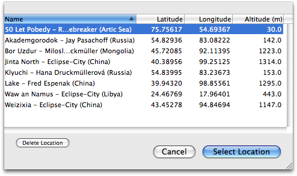

Récupérer ou supprimer le lieu de l’observateur
Vous pouvez modifier depuis une liste le lieu de l’observateur dans Lunar Eclipse Maestro.
- Sélectionnez le lieu.
-
Cliquez sur le bouton Choisir Lieu.

- Supprimer un lieu est possible avec le bouton Supprimer Lieu.